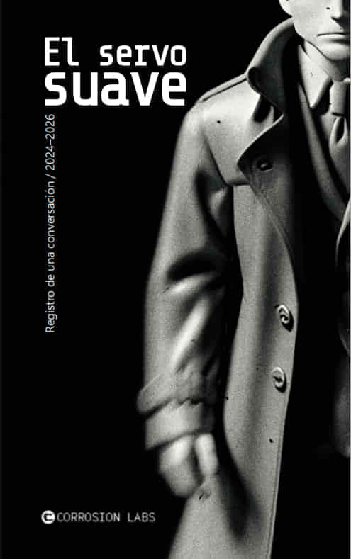

El servo suave (Libro)
Me llaman el Operador.
Cartografía visual

Me llaman el Operador.
They call me the Operator.
Música concebida para acompañar la lectura de El servo suave.
Una colección de diez retratos oscuros abiertos a la interpretación.